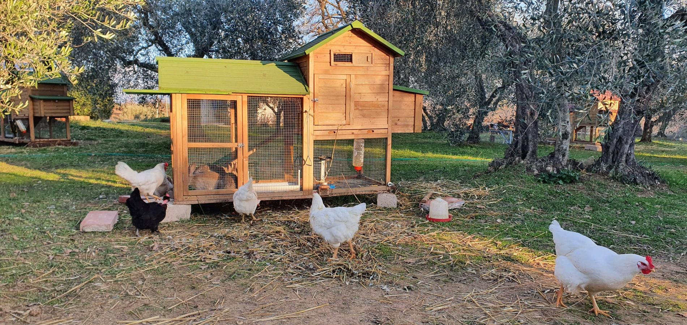

Attività e Laboratori
La FATTORIA DIDATTICA si concentra principalmente sull’educazione di persone di qualsiasi età attraverso:
attività pratiche svolte all’esterno in un percorso attraverso orti, vigneto e animali ed attività teoriche svolte all’interno della dell’edificio principale.
Le attività offerte sono basate principalmente sulla coltivazione raccolta e rielaborazione delle materie prime aziendali.
Accessibilità e Inclusione: Tutte le nostre proposte sono interamente accessibili e modellate sulle esigenze di persone di ogni età e abilità. Crediamo in un'ecologia umana e inclusiva, dove la natura diventa spazio d'incontro, crescita e riconnessione per tutti.
Per maggiori informazioni contattare l'azienta tramite i contatti a fine pagina
Attività offerte:
- Cura e rispetto degli animali da cortile
Un incontro ravvicinato e guidato con galline, conigli e gli altri piccoli abitanti della fattoria. Attraverso l'accudimento, il rispetto dei loro tempi e la somministrazione del cibo, promuoviamo l'empatia e la tutela di ogni essere vivente.
- Piccoli pollici verdi: giardinaggio esperienziale
Prendersi cura di fiori, vasi e aiuole per comprendere la bellezza della biodiversità. I partecipanti imparano la semina, il trapianto e la gestione delle piante ornamentali, sviluppando pazienza, coordinazione e amore per il paesaggio.
- L'orto secondo natura: orticoltura stagionale
Mani nella terra per scoprire come nascono gli ortaggi che arrivano sulla nostra tavola. Dalla preparazione del terreno al raccolto, un'attività pratica per apprendere i principi dell'agricoltura sostenibile, del consumo locale e del ciclo naturale.
- Sentieri botanici: riconoscimento di erbe, arbusti e alberi
Una passeggiata guidata alla scoperta della flora nativa tra specie erbacee, arbustive e arboree. Impariamo a osservare foglie, cortecce e frutti, sviluppando uno sguardo attento verso l'ecosistema che ci circonda e l'importanza della sua
salvaguardia. - Erboristeria spontanea: piante medicinali e alimurgiche
Un'immersione nel mondo delle erbe officinali e spontanee. Impariamo a riconoscerle nei campi, a raccoglierle nel rispetto dell'ambiente e a comprenderne i tradizionali usi curativi, cosmetici e alimentari trasmessi dal sapere popolare.
- L'arte della conservazione degli alimenti
Essiccatura, salamoie, confetture e sottoli: laboratorio pratico dedicato alle tecniche tradizionali per conservare i doni della terra. Un percorso educativo contro lo spreco alimentare e a favore di uno stile di vita orientato alla sostenibilità.
- Raccolta e pigiatura dell'uva (Agosto - Settembre)
Riviviamo il fascino dell'antica vendemmia toccando con mano la terra e i suoi frutti. Dalla raccolta dei grappoli alla classica pigiatura a piedi nudi, un'esperienza sensoriale unica per celebrare il ritmo delle stagioni e la tradizione vitivinicola locale.
- Dal grano al forno: la produzione del pane
Un viaggio che parte dai cereali per arrivare al profumo del pane fresco appena sfornato. I partecipanti imparano a impastare,
lievitare e modellare la propria pagnotta, riscoprendo la gestualità artigianale e il valore del cibo condiviso. - Mani in pasta: lezioni di cucina tradizionale
Un laboratorio culinario incentrato sui piatti tipici del territorio, realizzati con ingredienti a km zero provenienti dalla fattoria. Si impara cucinando insieme, valorizzando le ricette della memoria e la semplicità dei prodotti genuini.
- I dolci della memoria e della tradizione
Alla riscoperta dei sapori autentici di una volta attraverso la preparazione dei dolci tipici delle feste e della campagna. Un'attività che unisce manualità, narrazione e il piacere di condividere ricette che profumano di casa.
- Decorazione creativa con elementi della natura
Fiori secchi, pigne, rametti e foglie diventano materia prima per realizzare piccoli capolavori d'arredo. Un laboratorio per stimolare la fantasia, l'espressione personale e il riuso creativo, lasciandosi ispirare dalle forme e dai colori naturali.
- Tinture naturali: decorazione delle uova con piante locali
Un'antica tecnica che utilizza foglie, fiori e bucce per stampare ed estrarre pigmenti naturali sulle uova di fattoria. Un'esperienza affascinante che fonde tradizione, arte e chimica verde senza l'uso di sostanze sintetiche.
- Intaglio e magia della zucca di Halloween (Ottobre)
Dalla terra alla scultura: i partecipanti scelgono la propria zucca coltivata nell'orto per intagliarla o decorarla. Un'occasione ludica e inclusiva per festeggiare l'autunno, stimolare la manualità e portare a casa un ricordo unico.
- Passeggiate immersive nella natura
Percorsi accessibili a tutti tra i paesaggi del Veneto orientale per rallentare il ritmo e stimolare la percezione sensoriale. Un modo dolce per osservare la fauna, ascoltare i suoni della natura e rigenerare corpo e mente all'aria aperta.
- Meditazione e connessione consapevole in natura
Sessioni di respirazione e presenza mentale immerse nel silenzio del verde. Un'esperienza pensata per ritrovare l'equilibrio interiore, ridurre lo stress e percepire la profonda connessione tra l'essere umano e la Terra.



CONTATTI:
Tel 0421275123
Email info@aziendaagricolaFurlanis.it